Acción – METAL SLUG
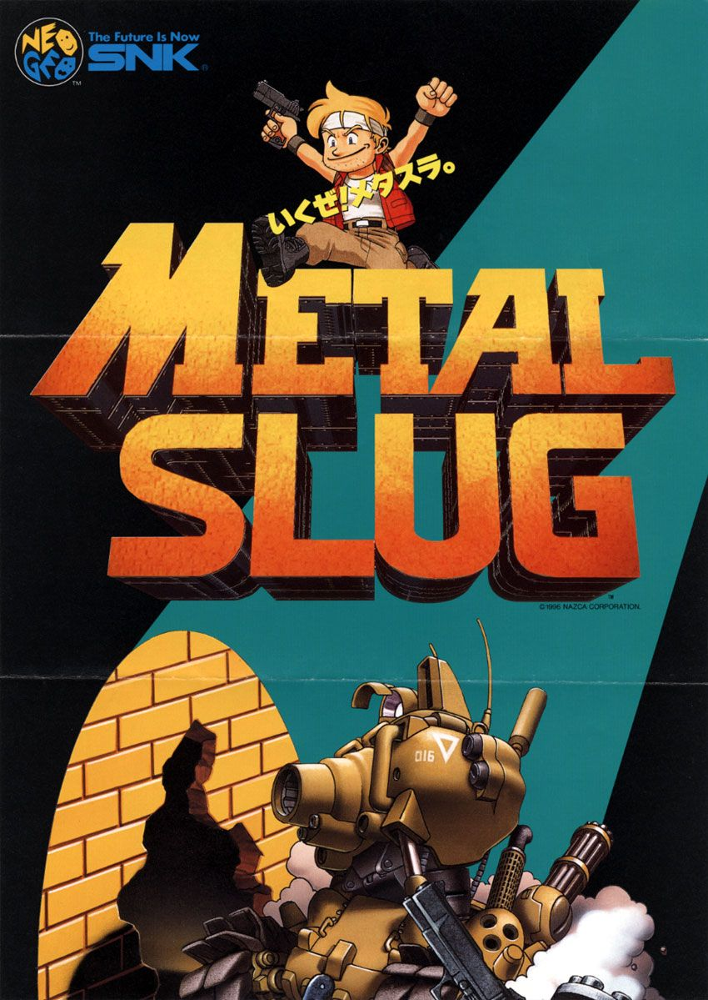
Tip 1: Aprende el ritmo del juego

Metal Slug recompensa la memoria muscular. Observa cuándo aparecen oleadas y domina el timing.
Tip 2: Mantente en movimiento
Nunca te quedes quieto o serás blanco fácil de proyectiles enemigos.
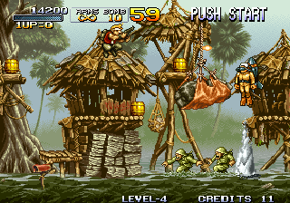
Tip 3: Aprovecha vehículos
Usa tanques y máquinas siempre que puedas; aumentan ataque y supervivencia.
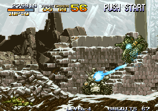
Tip 4: Conoce patrones de jefes

Cada boss tiene ciclos repetitivos. Domínalos para no desperdiciar vidas.
Tip 5: Rescata prisioneros
Casi siempre otorgan armas fuertes o puntos extra.
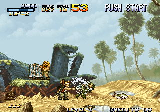
Aventura – THE LEGEND OF ZELDA
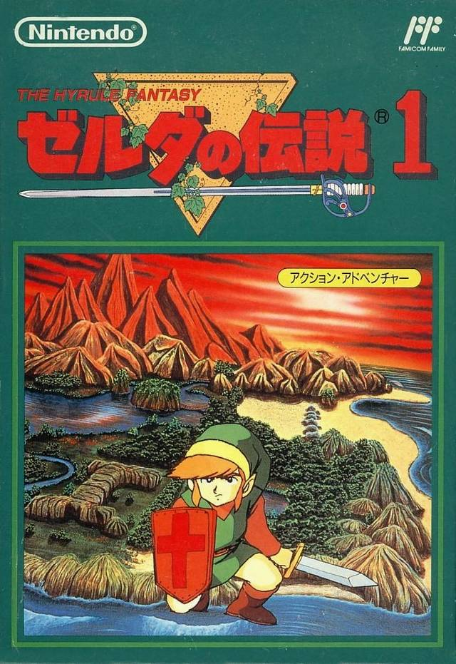
Tip 1: Examina todo el mapa

Muchos secretos están escondidos detrás de paredes, agua o arbustos sospechosos.
Tip 2: Habla siempre con NPCs

Muchísimas pistas clave solo se revelan conversando.
Tip 3: Administra bombas y flechas

Son recursos limitados, no los uses sin estrategia.
Tip 4: Consigue upgrades antes de jefes

Vida extra y mejores armas facilitan los combates más difíciles.
Tip 5: Observa patrones de monstruos

Todos los enemigos tienen puntos débiles y patrones repetidos.
RPG – FINAL FANTASY
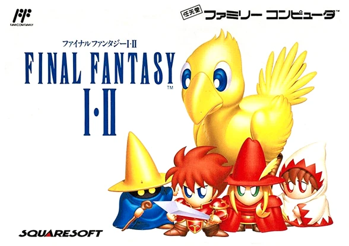
Tip 1: Diversifica tu equipo

Tanque, sanador y mago siempre son la base fundamental.
Tip 2: Guarda objetos raros
Los ítems de alto nivel funcionan mejor contra jefes.
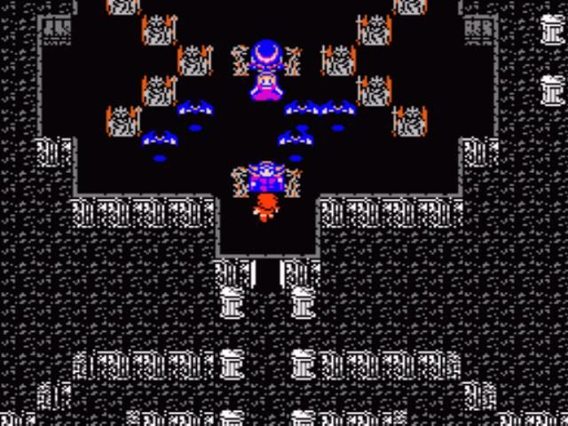
Tip 3: Sube niveles inteligentemente
Farmea antes de zonas críticas para evitar estancarte.
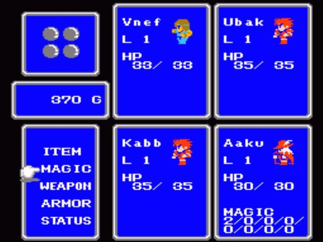
Tip 4: Explora ciudades al 100%

Tiendas ocultas ofrecen armas exclusivas.
Tip 5: Analiza atributos de enemigos

Muchos tienen debilidades elementales clave.
Shooter – DOOM
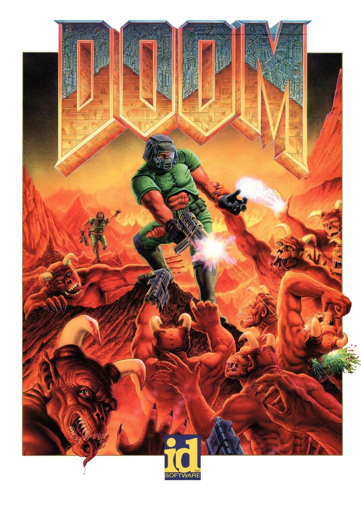
Tip 1: Mantente en movimiento

Strafear es esencial para evitar daño masivo.
Tip 2: Usa el arma correcta
Escopeta para enemigos pequeños, lanzacohetes para grupos.
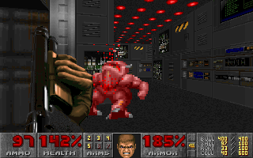
Tip 3: Escucha sonidos enemigos

Indican ubicación y tipo de amenaza.
Tip 4: Busca secretos
Muchos niveles esconden salud, munición y mejoras.
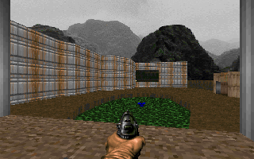
Tip 5: Mantén el control de la arena
Domina rutas de escape y zonas seguras.
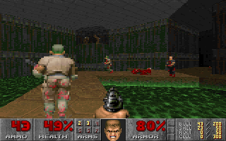
Carreras – SONIC DRIFT
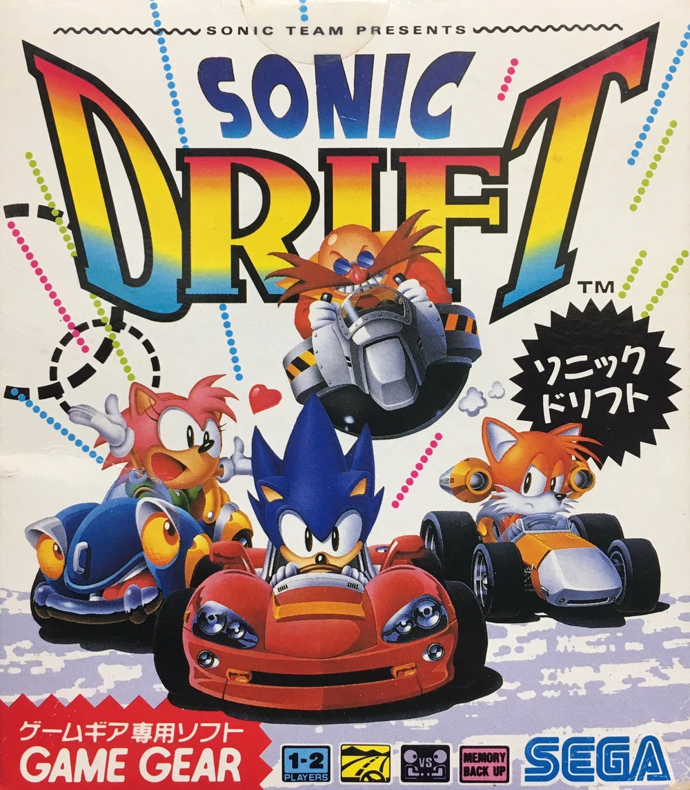
Tip 1: Domina derrapes
Los giros cerrados requieren práctica precisa.
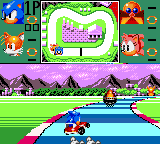
Tip 2: Elige bien piloto
Sonic = velocidad, Tails = control.
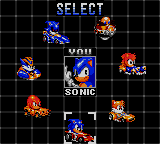
Tip 3: Usa ítems en zonas clave
Utilízalos cuando puedas ganar distancia máxima.
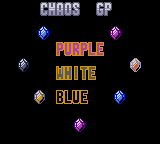
Tip 4: Aprende los circuitos

Conocer la pista es mitad de la carrera ganada.
Tip 5: Evita colisiones
Perder velocidad compromete toda la vuelta.
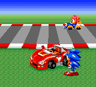
Plataformeros – Super Mario Brothers

Tip 1: Corre antes de saltar

En Mario, una carrera corta aumenta la distancia de salto y permite alcanzar plataformas lejanas.
Tip 2: Usa el impulso de rebote

Saltar sobre enemigos no solo te da ventaja, también puede impulsarte para llegar más alto.
Tip 3: Golpea todos los bloques "?"

Muchos contienen monedas, power-ups o incluso vidas ocultas.
Tip 4: Guarda los power-ups

El Fire Flower y el Super Leaf facilitan niveles difíciles. Evita perderlos jugando con cuidado.
Tip 5: Explora tuberías ocultas

Muchos niveles de Mario tienen rutas secretas, atajos o áreas de monedas dentro de tuberías.
Terror – SILENT HILL
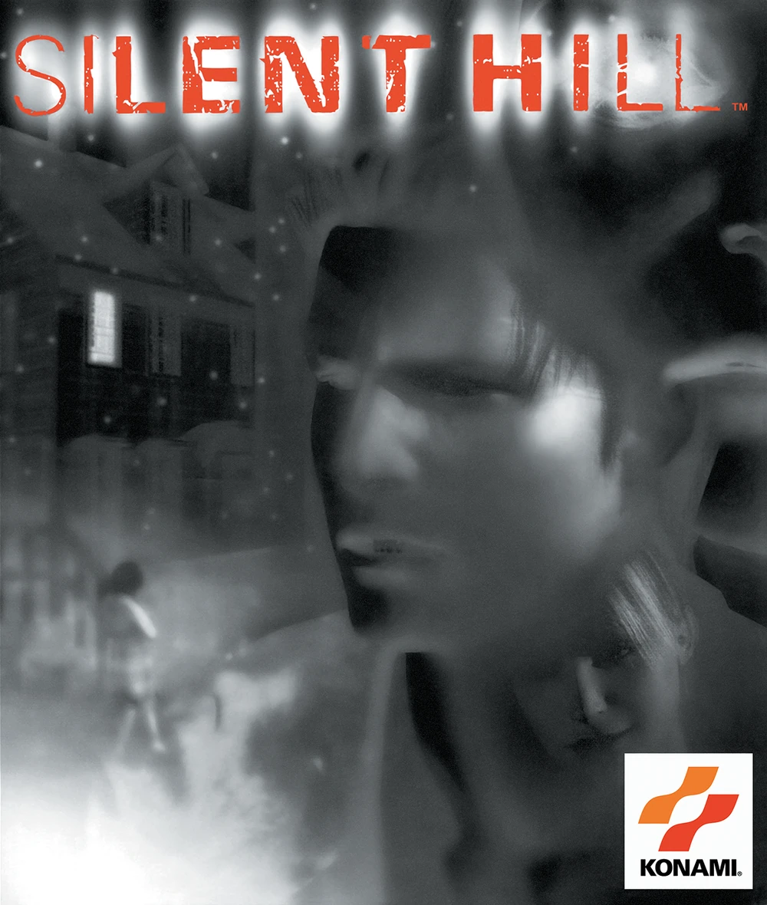
Tip 1: Escucha la radio
La estática de la radio indica enemigos cercanos. Úsala como tu principal alerta.
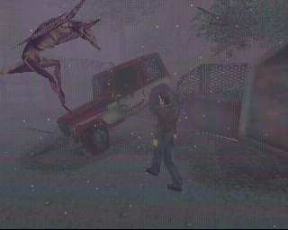
Tip 2: Conserva la munición
En Silent Hill la munición es escasa. Evita disparar si puedes huir.
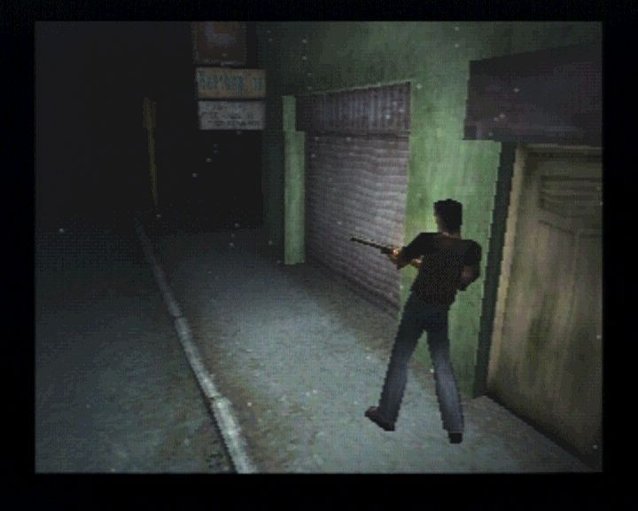
Tip 3: Explora cada rincón
Muchas llaves y objetos esenciales están escondidos en zonas poco visibles.
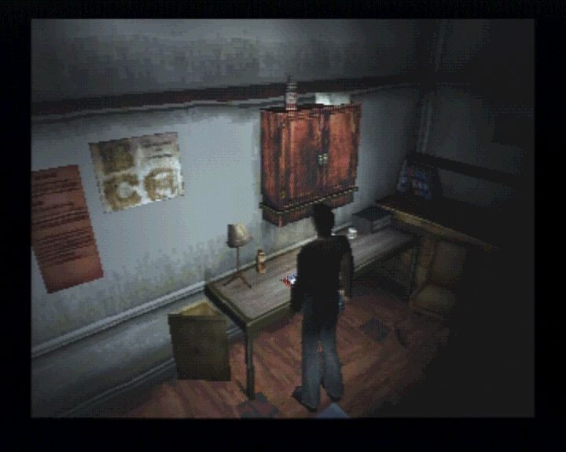
Tip 4: Observa pistas visuales
El entorno te da pistas sobre acertijos y rutas.
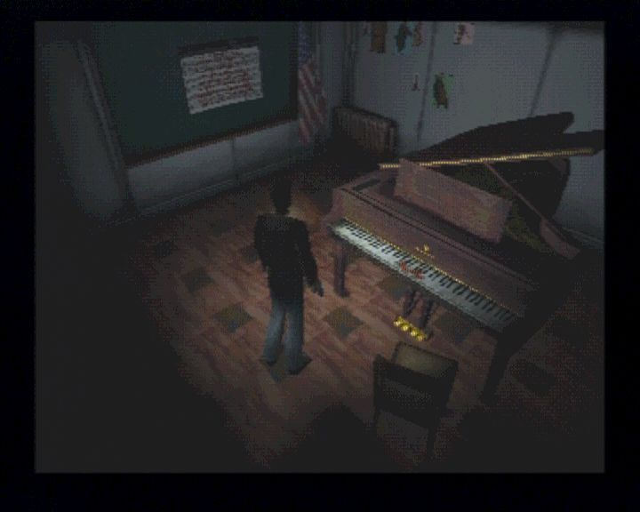
Tip 5: Mantén la calma
Silent Hill juega con tensión psicológica. Avanza despacio y analiza tu entorno.
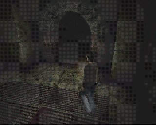